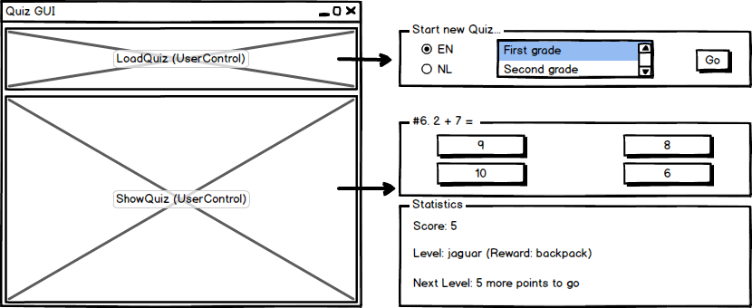

QuizIT bvba is een (fictieve) jonge start-up die een quiz wenst te ontwikkelen voor kinderen. Voor het ontwerp van de GUI werken ze reeds samen met een consultancy-bedrijf. Aan jullie wordt gevraagd om een flexibele datalaag te ontwerpen. Het moet mogelijk zijn om later de vragen van de quiz in te lezen vanuit een databank, zonder aanpassingen te doen aan het ontwerp. Als het ontwerp klaar is moet je het ook implementeren.
Meer informatie over de vereisten:
De vragen van de quiz zijn onafhankelijk van het niveau, maar de niveaus (en bijhorende beloningen) zijn wel afhankelijk van de leeftijdscategorie. Zo heeft elke leeftijdscategorie andere niveaus (met een andere omschrijving en beloning), en is het aantal punten nodig voor behalen van een niveau ook verschillend. Een peuter stijgt bijvoorbeeld al na 3 goede antwoorden naar niveau ei en krijgt daarbij een beer als beloning, terwijl 7-jarigen 5 goede antwoorden moeten geven vooraleer ze overgaan naar niveau goed en daarbij een rugzakje krijgen.
Ontwerp een datalaag voor de quiz, en werk deze uit voor 2 types invoerbestanden. De opgave doorloopt verschillende stadia:
Om de opdracht te realiseren maken we gebruik van pair programming. Bij pair programming werk je per 2 aan één toestel, waarbij elke persoon een andere rol heeft. Eén persoon is de uitvoerende programmeur (engels: driver) die de code schrijft. De andere persoon heeft een controlerende en vooruitdenkende taak (engels: observer), enerzijds ziet hij er op toe dat de programmeur geen fouten schrijft, anderzijds denkt hij al na over de toekomstige stappen. Uiteraard is dit enkel van toepassing bij het implementeren van de code. Het ontwerp wordt door beide personen samen gemaakt. Bij het implementeren wissel je bovendien regelmatig van rol (bv. om de 10 minuten).
De GUI-ontwikkelaars willen parallel met ons aan de GUI werken. Zijn er nog onduidelijkheden? Welke afspraken moet je met hen maken? Formuleer een aantal vragen, kies een oplossing en leg de afspraken met de GUI-ontwikkelaars vast. Toon deze informatie aan de labobegeleiders. Als je in het vervolg van het labo deze afspraken zou moeten aanpassen, noteer dit dan en toon dit aan het einde van het labo.
Werk een ontwerp voor de datalaag uit op papier. Welk(e) pattern(s) kan je hierbij gebruiken? Hou hierbij rekening met de volgende aspecten:
Beschrijf (op papier of elektronisch) welke testen je zou moeten voorzien voor de datalaag. Toon de omschrijving van de testen aan een labobegeleider.
Voor de implementatie van de datalaag kan je deze invoerbestanden gebruiken.
De gegeven bestanden bevatten maar een subset van de uiteindelijke quiz, en in een later stadium zullen uitgebreidere bestanden aangeleverd worden. Om in de toekomst eenvoudig de bestanden te kunnen vervangen is het dus belangrijk dat je de naam en/of inhoud van de gegeven invoerbestanden niet wijzigt!
Controleer je ontwerp van puntje 2. Is je ontwerp flexibel genoeg om beide types bestanden te ondersteunen? Pas je ontwerp aan indien nodig en implementeer de datalaag in C#. Welk type project gebruik je best?
Voeg bovendien een Unit Test project toe aan je solution waarin je enkele zinvolle unit testen uit je lijstje implementeert.
Voorzie een eenvoudige Console applicatie waarmee je de applicatie kan uittesten (als Proof of Concept).
Hieronder vind je een mogelijke output van het programma:
Create quiz from CSV or TXT: csv
1 - Toddlers
2 - Preschoolers
3 - First grade
4 - Second grade
Create quiz for which age? [1-4]: 1
#1. Wat sound does a duck make?
- Quack
- Caw
- Growl
- Squeak
Your answer (or STOP to exit): Quack
Correct! Your score: 1
Next Level: 2 more points to go
#2. A leaf of a tree is...
- Purple
- Orange
- Green
- Black
Your answer (or STOP to exit): Purple
Wrong answer! Your score: 1
Next Level: 2 more points to go
#3. Which one doesn't belong?
- Car
- Butterfly
- Train
- Bus
Your answer (or STOP to exit): Butterfly
Correct! Your score: 2
Next Level: 1 more points to go
#4. Wat sound does a duck make?
- Quack
- Caw
- Growl
- Squeak
Your answer (or STOP to exit): Quack
Correct! Your score: 3
Current Level: egg (Reward: doll)
Next Level: 3 more points to go
#5. A leaf of a tree is...
- Purple
- Orange
- Green
- Black
Your answer (or STOP to exit): STOP
Door onvoorziene uitgaven en interne problemen heeft QuizIT bvba de samenwerking met de GUI-ontwikkelaars moeten stopzetten. Gelukkig hadden de GUI-onwikkelaars wel al een eerste rudimentair ontwerp opgeleverd (zie hieronder). Implementeer de GUI in WPF met behulp van je datalaag.

Om een WPF user control binnen hetzelfde WPF project aan je MainWindow toe te voegen kan je in XAML de local tag gebruiken, zoals geïllustreerd in onderstaand voorbeeld:
<local:LoadQuiz Grid.Row="0" Grid.Column="0"/>
Je kan de WPF user control een naam geven:
<local:LoadQuiz x:Name="loadQuiz" Grid.Row="0" Grid.Column="0"/>
void Methode(object sender, RoutedEventArgs e) (van MainWindow.cs) toevoegen aan de delegate voor een knop btnCSV.Checked:
loadQuiz.btnCSV.Checked += Methode;